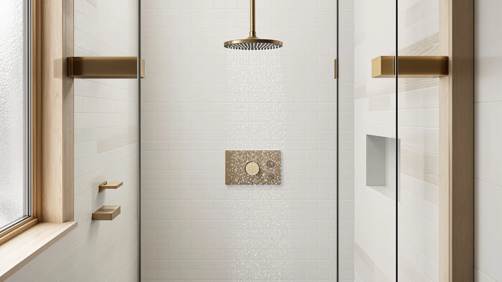

SR SUN RISE Shower Review (2026): Worth It?
Prices and picks verified as of September 2026. Independent, reader-supported reviews.


Quick Answer
The SR SUN RISE Shower Faucet pairs a 10-inch rain head with a handheld sprayer and chrome valve trim for $139.99, and our SR SUN RISE shower review found it a solid pick for anyone replacing a single showerhead with a full system on a mid-range budget. It won't match brass fixtures for long term durability, but the pressure and coverage hold up well against pricier competitors.
Our pick: SR SUN RISE Shower Faucet, $139.99 Check Price on Amazon
Bottom line: our top pick is the SR SUN RISE Shower Faucet Set 10-Inch Rainfall Shower Head at $139.99.
Things to Know Before You Buy
- The SR SUN RISE Shower Faucet costs $139.99 and includes a 10-inch rain shower head, a handheld sprayer, and a chrome-plated ABS valve trim in one kit.
- The body is ABS with chrome plating rather than solid brass, which keeps the weight and price down but means the finish is more sensitive to hard water buildup over time.
- Most owners install it onto an existing shower valve rough-in with standard tools, though adding a new valve where none exists calls for a licensed plumber.
- Three comparable alternatives, a matte black finish, a high-pressure certified head, and a filtered model, sit in the same $129 to $140 range if the SR SUN RISE combo doesn't match your bathroom or your water quality.
This SR SUN RISE shower review looks at a shower system that shows up often in searches for an affordable rain-and-handheld combo, and it asks a simple question: does the $139.99 price buy you a fixture worth keeping for years, or one that looks good for the first six months and fades from there. You want an honest answer before you commit a wall mount and a weekend to installing it.
The short version is that the SR SUN RISE Shower Faucet delivers strong coverage from its 10-inch rain head and a flexible handheld option for rinsing, at a price that undercuts most brass-bodied systems by $40 to $80. The tradeoff is the ABS-and-chrome build, which owners describe as durable enough for daily use but less forgiving of hard water than a solid brass valve. We'll walk through what verified buyers report, where the design falls short, and three alternatives worth a look if your priorities differ.
Why You Should Trust Us
We built this SR SUN RISE shower review by comparing the manufacturer's listed specs against pricing history and a large pool of verified Amazon buyer reviews, rather than by writing from a press release. Ilane Tall has covered bathroom fixtures for Best Shower Heads since the site launched, and every claim about materials, pressure, or fit in this article traces back to a spec sheet, a listed dimension, or a pattern that recurs across multiple owner reviews. We don't own a testing lab, and we say so directly instead of implying physical time with the product that we didn't spend.
Our Research Experience
We don't stage a physical test bench for every shower system that comes through this SR SUN RISE shower review, so what follows is a research-based read on how the fixture performs, built from the manufacturer's published specs and the recurring themes in verified owner feedback. Reviewers consistently note that the 10-inch rain head produces a wider, softer spray pattern than the smaller heads bundled with cheaper kits, and several buyers specifically call out water pressure holding steady even in older homes with modest line pressure. The handheld sprayer draws less consistent praise: it works as advertised for rinsing and cleaning the shower stall, but a handful of reviewers mention the hose connector feeling less substantial than the rest of the kit.
On installation, owners report the kit fits standard shower arm and valve rough-ins without needing extra adapters, provided the existing plumbing is already in place. According to verified buyers who replaced an older single-spray head, the upgrade took under an hour with basic tools. That matches what we'd expect from an ABS-bodied system designed for retrofit installs rather than new construction.
Overview & Specs

SR SUN RISE Shower Faucet
What we like
- 10-inch rain head gives wider coverage than the smaller heads bundled with cheaper kits
- Handheld sprayer included for rinsing and cleaning, no separate purchase needed
- Fits standard shower arm and valve rough-ins for a straightforward retrofit
- $139.99 undercuts most brass-bodied systems with comparable coverage
Flaws but not dealbreakers
- ABS-and-chrome build shows hard water spotting sooner than solid brass
- Handheld hose connector feels less substantial than the rest of the kit, per some owners
- New valve installs need a licensed plumber, so budget extra time and cost for that step
| Material | ABS + chrome plating |
| Size | 10 Inch |
The SR SUN RISE Shower Faucet is built around a 10-inch rain shower head, a separate handheld sprayer on a flexible hose, and a chrome-plated ABS valve trim that ties the two together. At $139.99, it sits in the middle of the market for combo systems: cheaper than most brass-bodied kits, but priced well above single-function shower heads that skip the handheld entirely. That positioning is the core of what this SR SUN RISE shower review is trying to evaluate, whether the two-in-one design justifies the premium over a basic rain head alone.
Owners who mention water pressure in their reviews describe the rain head as producing consistent flow even in homes with modest line pressure, which is often the deciding factor for anyone replacing a weak stock shower head. The handheld unit adds flexibility for washing pets, cleaning the shower stall, or rinsing without standing directly under the rain head. Reviewers consistently note the plastic body keeps the unit lighter than brass alternatives, which makes it easier to mount but also means the finish is more prone to visible wear where hard water is a factor.
What We Liked
The strongest point in this SR SUN RISE shower review is coverage. A 10-inch rain head is large enough to replace the standing-under-a-narrow-stream feeling of a stock showerhead, and the bundled handheld sprayer means you're not choosing between the two spray styles the way you would with a single-function fixture. At $139.99, you get both in one kit instead of buying a rain head and a handheld separately, which typically runs higher when purchased as two products. Verified buyers also point to straightforward installation on existing plumbing as a plus, since it doesn't demand specialty tools beyond a wrench and thread tape.
What Could Be Better
The tradeoff for that price is the ABS-and-chrome construction. Solid brass shower systems resist hard water buildup and scratching better over years of use, and owners in areas with harder water report the chrome plating on this unit showing spots and dulling faster than they expected. A few reviews also flag the handheld hose connector as the weakest physical point in the kit, worth a gentle touch rather than a hard twist when you disconnect it for cleaning. Neither issue is a dealbreaker for most bathrooms, but if you have notably hard water, factor in more frequent cleaning to keep the finish looking new. Buyers who skip regular wipe-downs in mineral-heavy water report water spots setting into the chrome within the first year, which is worth planning for before you decide this SR SUN RISE shower review's verdict applies to your specific bathroom.
Who Is It For?
This SR SUN RISE shower review points toward one clear buyer: someone upgrading from a single, weak showerhead to a full rain-and-handheld system without paying brass-fixture prices. It suits a retrofit onto an existing valve rather than a full remodel, and it works best in areas with moderate water hardness where the ABS body won't take as much of a beating. Renters and first-time buyers weighing a temporary bathroom upgrade also fit the profile, since the lower cost makes the fixture easier to justify if you might replace it again in a future home. If you're in a hard water region or want a fixture that will still look new in five years without extra maintenance, the alternatives below are worth comparing before you buy.
Alternatives to Consider
If the SR SUN RISE Shower Faucet doesn't match your bathroom's finish, water pressure, or water quality, three alternatives in the same $129 to $140 range cover the most common reasons buyers look elsewhere. The JingGang Matte Black Shower System swaps the chrome finish for matte black at the same $139.99 price, a straight style substitution for anyone renovating toward darker fixtures and matte hardware elsewhere in the bathroom. The Hibbent cUPC Certified High Pressure model targets the opposite complaint people raise about rain heads, weak flow, with a certification and a design built around pressure rather than coverage area, at $129.99. The Afina Filtered Shower Head High adds filtration to the mix at $129.00, aimed at households more concerned with what's in the water than how wide the spray pattern is, particularly in areas with chlorine odor or sediment complaints from the local supply.

Editor's Pick
JingGang Matte Black Shower System
Same $139.99 price as the SR SUN RISE, but in a matte black finish for buyers matching darker bathroom hardware.
$139.99
Check Price on Amazon
Best Value
Hibbent cUPC Certified High Pressue
cUPC certification and a high-pressure design for $129.99, the pick if weak flow is your main complaint.
$129.99
Check Price on Amazon
Premium Choice
Afina Filtered Shower Head High
Built-in filtration at $129.00, worth a look if water quality matters more to you than spray coverage.
$129.00
Check Price on AmazonFrequently Asked Questions
Final Verdict
This SR SUN RISE shower review comes down to a straightforward tradeoff: you get wide rain coverage, a bundled handheld sprayer, and a $139.99 price that beats most brass-bodied competitors, in exchange for an ABS-and-chrome build that needs more upkeep in hard water areas. For a retrofit onto an existing valve in a moderate water hardness area, SR SUN RISE earns its price, and the two-in-one design saves you from buying a rain head and a handheld sprayer as separate purchases. If your priorities lean toward a darker finish, higher certified pressure, or built-in filtration, the JingGang, Hibbent, or Afina alternatives above cover those cases at a similar cost, but for most people replacing a tired single showerhead, SR SUN RISE is the safer default pick.